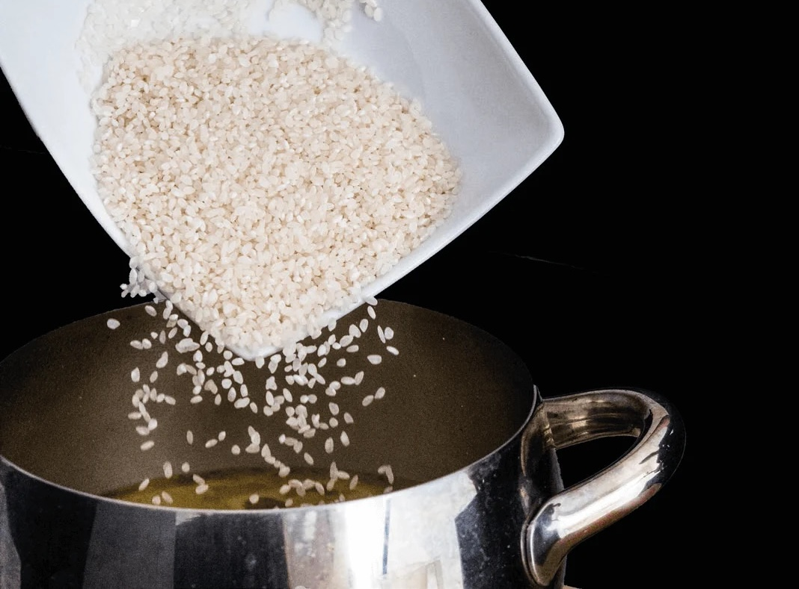
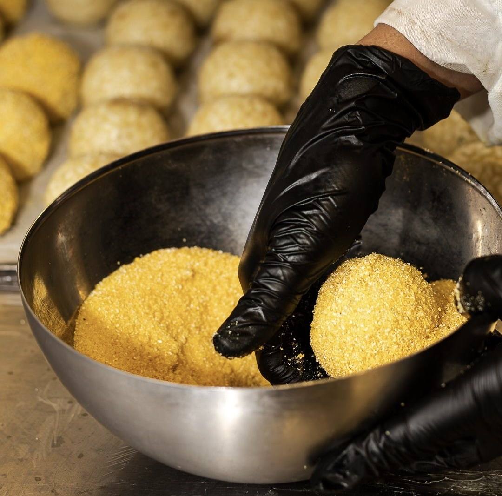
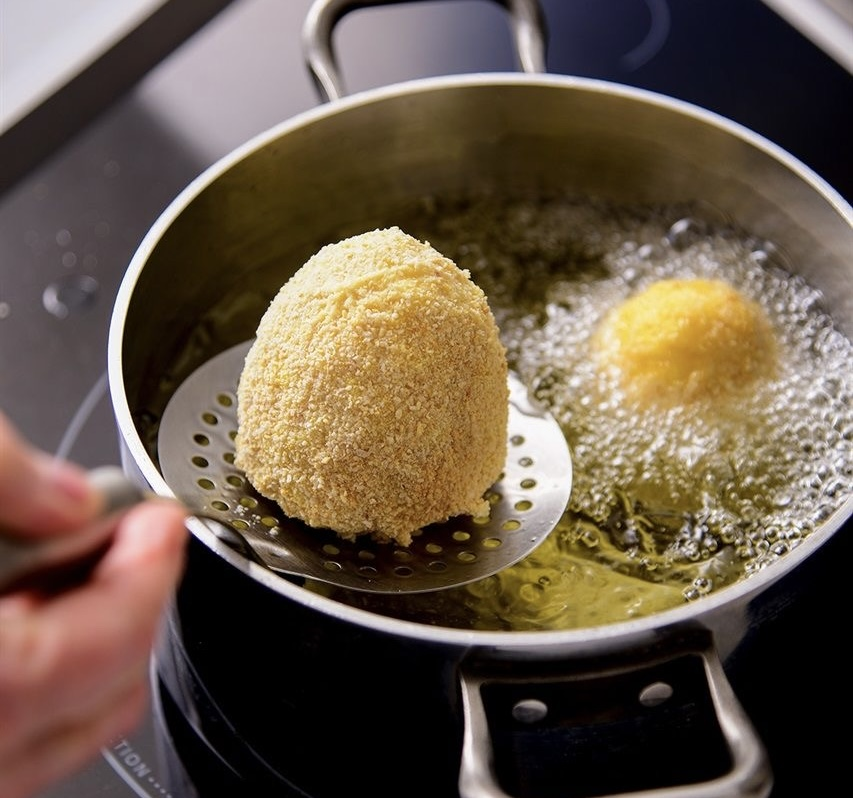

IL SIMBOLO
Più di un piatto.
Un'icona siciliana.
Arancino o Arancina? Qualunque sia il nome, rappresenta tradizione, famiglia, festa e orgoglio siciliano. Non è semplicemente cibo: è cultura.

Perché l'Arancino è un simbolo?
In Sicilia l'arancino non è uno snack qualsiasi. È presente nelle feste, nelle rosticcerie, nelle domeniche in famiglia e nelle tradizioni che si tramandano da generazioni.
Racchiude l'essenza della cucina siciliana: ingredienti semplici trasformati in qualcosa di straordinario. Ogni città, ogni famiglia e ogni quartiere custodisce la propria versione, ma tutti condividono la stessa idea: l'arancino è identità.
I pilastri sacri dell'arancino

Riso
Deve essere compatto e saporito. Lo zafferano non è un dettaglio: è ciò che dona colore, profumo e anima.

Panatura
Croccante fuori, morbida dentro. La panatura non è un semplice rivestimento: è ciò che permette all'arancino di mantenere la sua forma.

Frittura
L'arancino nasce fritto. Non cotto al forno. Non "light". Fritto. È la sua crosta dorata e croccante a custodire tutto il sapore della tradizione.
LA GELOSIA DEI SICILIANI
Siamo molto gelosi del nostro arancino. Non è cattiveria. È amore per una tradizione che dura da secoli.
Per questo chiediamo una sola cosa: rispettarlo. *GRRR*
Gli orrori da non fare
Alcune cose possono sembrare innovative. In Sicilia vengono considerate veri e propri crimini gastronomici.
Riso bianco
Senza zafferano perde identità. A quel punto siamo più vicini a un supplì che ad un arancino.
Arancino al pesce
Esistono molte varianti moderne, ma il simbolo della tradizione resta il ragù.
Arancino dolce
Può essere interessante come dessert, ma non chiamatelo simbolo della tradizione.
Arancino Sushi
Riso, alghe e wasabi? I nostri nonni stanno già protestando.
Cottura al forno
No. Semplicemente no. L'arancino nasce fritto.
Gourmet estremo
Caviale, oro alimentare e stranezze varie: la tradizione non ha bisogno di travestimenti.
UNA QUESTIONE DI RISPETTO